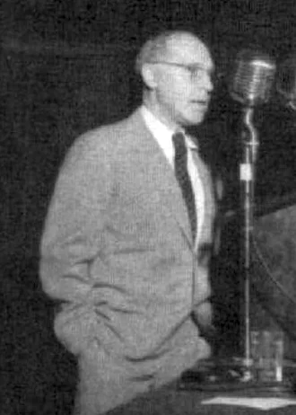
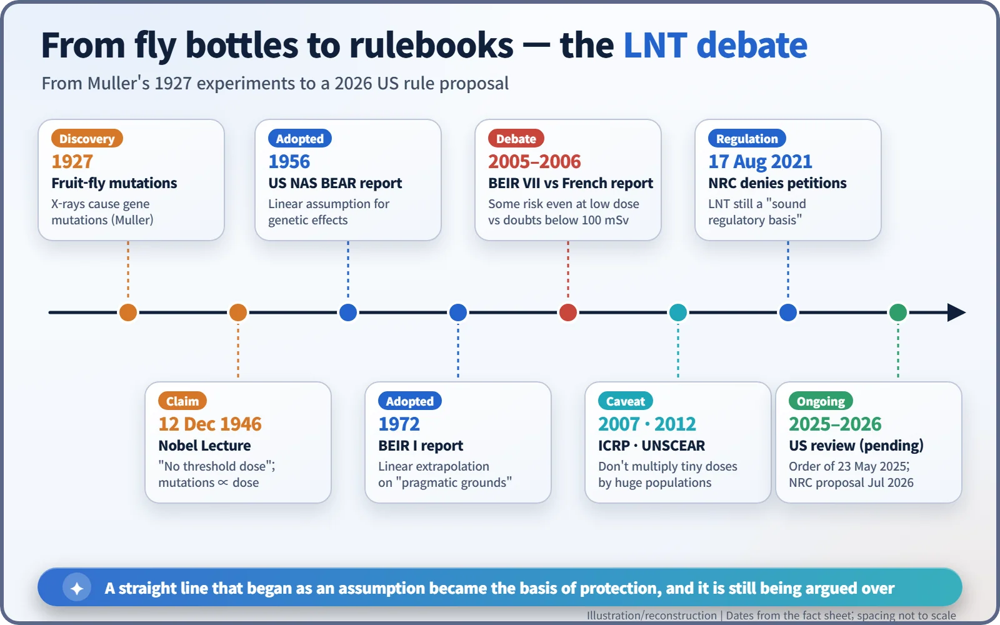
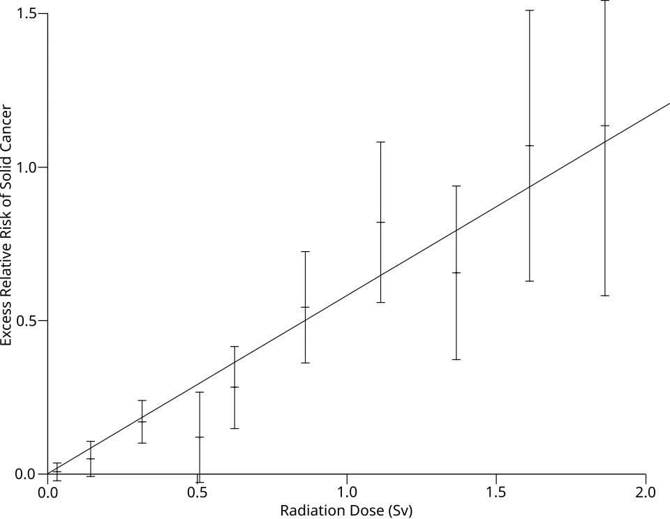
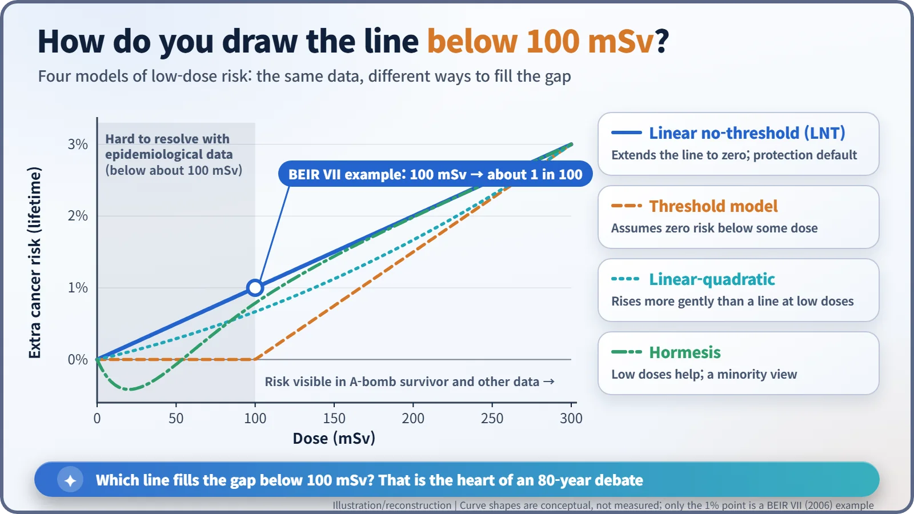

Nuclear History · 232
Is Any Dose Too Much? — The 80-Year Debate over the Linear No-Threshold (LNT) Model
A straight line drawn from fruit-fly experiments at high doses down to zero became the basis of radiation protection, and the region below 100 mSv is still argued over.
In 1946 Hermann Muller told his Nobel audience that there is "no threshold dose" for radiation-induced mutations. That straight line, extended from high doses down to zero, became the linear no-threshold (LNT) model at the heart of radiation protection. Because the risks below about 100 mSv are too small to see directly, scientists, international bodies and regulators have argued over that line ever since.
Four hundred roentgens
On 12 December 1946, in his Nobel Lecture in Stockholm, the American geneticist Hermann Joseph Muller (1890–1967) offered a figure as an example of a low dose. Even at total doses "as low as 400 r" of gamma rays, he explained, mutations in fruit flies rose in step with the dose. Then he drew his conclusion: the results "leave, we believe, no escape from the conclusion that there is no threshold dose." [1]
Here is the twist. In today's units, 400 roentgens is very roughly 3 to 4 sieverts (an approximate conversion), dozens of times more than the doses below 100 millisieverts (mSv) that people argue about now. Muller had seen a straight line at high doses and extended it all the way down to zero. That extension is where an 80-year argument begins.

A straight line found in a fly bottle
In 1927 Muller showed that X-rays sharply increase gene mutations in the fruit fly Drosophila, work that won him the 1946 Nobel Prize in Physiology or Medicine "for the discovery of the production of mutations by means of X-ray irradiation". In his lecture he said that the frequency of gene mutations "is directly and simply proportional to the dose of irradiation applied", whatever the type of ray and however the dose was timed. [1]
His reasoning was a picture of target practice. A single "hit" from radiation on a gene produces a mutation. Halve the dose and you halve the chance of a hit, but you never reduce it to zero. Fire fewer arrows and you score fewer hits; you are not guaranteed to score none.
The fallout years: an assumption becomes policy
In the 1950s, fallout from atmospheric nuclear weapons tests spread around the globe, and the question of what very small doses do to people became political. In 1956 the genetics panel of the US National Academy of Sciences' report on the Biological Effects of Atomic Radiation (BEAR) used a linear assumption for genetic effects; Muller sat on that panel. In 1958 the UN Scientific Committee on the Effects of Atomic Radiation (UNSCEAR) noted how hard it was to obtain reliable information about the effects of small doses. [4] [7]
The gap was filled with a straight line. The first BEIR report in 1972 said linear extrapolation "may be justified on pragmatic grounds as a basis for risk estimation". That was less a proof than a working agreement. The linear no-threshold (LNT) model became the default assumption of radiation protection, paired with the ALARA principle: keep exposures "as low as reasonably achievable". [7]

Why the region below 100 mSv is so hard to see
Why is there still no verdict? An example in the US National Academies' BEIR VII report (2006) explains it. If 100 people each receive an extra 100 mSv, about one of them would be expected to develop cancer because of it. But about 42 of the same 100 would develop a solid cancer or leukaemia from other causes anyway. Cut the dose by a factor of ten and that extra "one-tenth of a person" disappears into the statistical noise of those 42. [2]
That is why even decades of follow-up on large groups such as the Hiroshima and Nagasaki survivors show rising risk above roughly 100 mSv but cannot say clearly what happens below it. BEIR VII itself defines "low doses" as the range from near zero up to about 100 mSv. [2]


Same data, different conclusions
In 2005–2006, BEIR VII backed LNT, concluding that "the preponderance of information indicates that there will be some risk, even at low doses." At about the same time, a 2005 report by the French Academy of Sciences and the National Academy of Medicine questioned applying LNT below 100 mSv. There is also the idea of "hormesis", that low doses might actually be beneficial; BEIR VII did not accept it, and it remains a minority view. [2] [7]
Even LNT's supporters drew a line. In its 2007 recommendations the International Commission on Radiological Protection (ICRP) kept LNT as a prudent basis for protection, but said it is inappropriate to add up tiny doses across huge populations to calculate numbers of "excess cancer deaths". UNSCEAR advised the same in 2012. A yardstick for protection, in other words, is not a death-counting machine. [7]
The history itself became contested. From 2011, the American toxicologist Edward J. Calabrese argued that Muller had known of results pointing to a threshold shortly before his lecture and still declared that there was none. In a 2017 paper, Jan Beyea replied that the evidence of the time "overwhelmingly favored a (genetics) LNT and that no calculations were suppressed." That dispute has not been settled either. [4] [5]
On the regulator's scales
In February 2015 the US Nuclear Regulatory Commission (NRC) received three petitions asking it to abandon LNT and remove ALARA. After reviewing more than 3,200 public comment submissions, the NRC denied them on 17 August 2021, concluding that "the LNT model continues to provide a sound regulatory basis for minimizing the risk of unnecessary radiation exposure." [3]
The debate soon flared again. A US executive order of 23 May 2025 directed a reconsideration of LNT and ALARA. In July 2026 the NRC proposed replacing ALARA with a "graded approach" to dose management while leaving dose limits unchanged, and kept parts of the linear model because, in its words, "no consensus-supported, regulation-ready alternative model exists at this time." As of this writing the final rule has not been issued. [6] [7]
In the end, LNT is less a proven law of nature than a cautious management model chosen for a region that measurement cannot reach. How far to trust that straight line is still an open question.